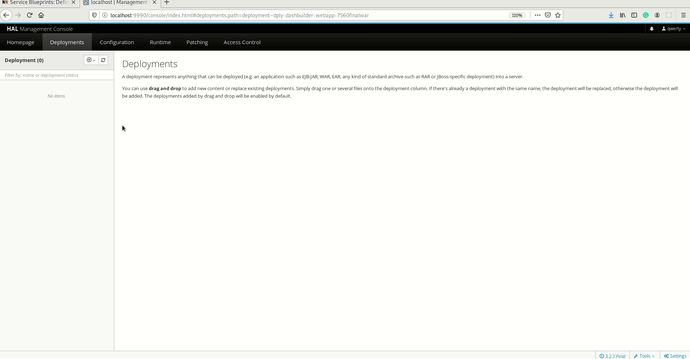
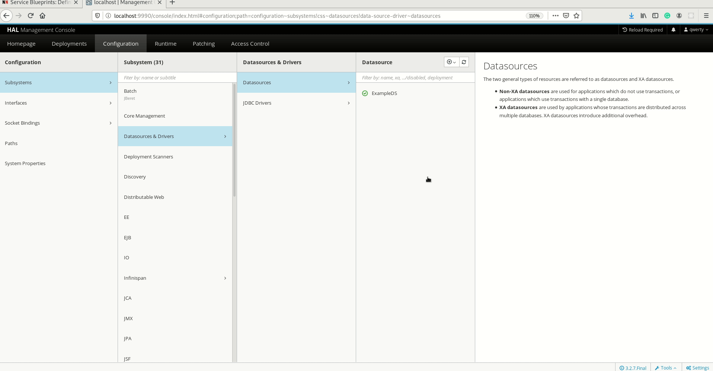
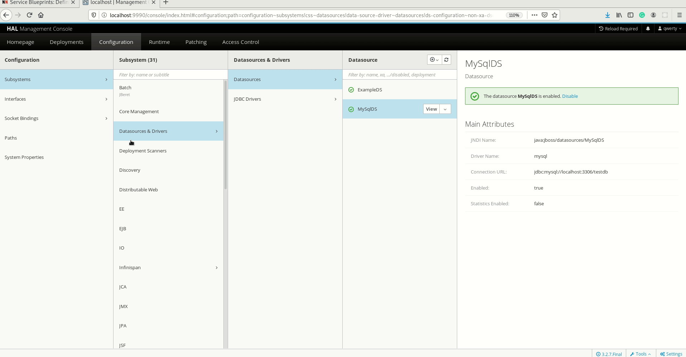

Add SQL datasource for authoring dashboards
Dashboards are quintessential ways of gaining precise and accurate at-a-glance insights into complex data indicating key performance indicators(KPIs), metrics, and other key data points related to business or specific processes.
DashBuilder is a one such standalone tool that is also integrated into Business Central and is used by the Datasets editor and Content Manager page to facilitate creating dashboards and reporting. You can get started by referring to the DashBuilder Getting Started guide, if you are a first-time user. Refer to this post for configuring CSV datasets for authoring dashboards on DashBuilder.
In the last post, we walked you through the process of adding Prometheus datasets for authoring dashboards in DashBuilder.
When it comes to building dashboards, you can configure the dashboards to consume your own datasets in DashBuilder from a variety of sources like Bean, CSV, SQL, Prometheus, Elastic Search, Kafka, and Execution server. In this post, you will learn how to add and configure a SQL dataset for your dashboards.
About SQL
SQL or Structured Query Language is a domain-specific language used in programming and designed for managing data held in a relational database management system (RDBMS), or for stream processing in a relational data stream management system (RDSMS). It is particularly useful in handling structured data, i.e. data incorporating relations among entities and variables.
Add and configure SQL datasets on DashBuilder
- To get started, you will have to configure DashBuilder to run on the WildFly server since it is impossible to get the SQL data set configured in Dev mode as in Dev mode all WildFly configurations are lost when we rebuild the project. For this example, I have used WildFly 19.x. Download WildFly and the DashBuilder WAR to deploy in the WildFly server. Unzip the WildFly zip and open a terminal inside the WildFly unzipped folder(let’s call this WILDFLY_HOME). Go to /bin and run standalone.sh using ./standalone.sh or sudo sh standalone.sh. You can now find the WildFly server running in localhost:9990 and see the following screen which prompts to add a user.

- Open another terminal and run ./add-user.sh and add a ManagementRealm user by selecting option “a” and adding a username and password, followed by adding an “admin” group following the instructions flashing on the terminal. Here is what the terminal should look like after you add a user.

Note: You have to add a ManagementRealm user to login into WildFly, the applicationRealm users are the users you will need to login into the apps deployed in WildFly.
- Click on the “Try again” link on the browser and login the same credentials that you configured in the terminal. You will now be able to see the HAL Management Console screen.

- Now click on the Start link under Deployments and deploy the DashBuilder WAR you downloaded earlier. Refer to the GIF below for reference. You can click on the link against “Context Root” in order to access DashBuilder.

- Now add a ApplicationRealm user in order to access DashBuilder by running ./add-user.sh -a -u ‘admin’ -p ‘admin’ -g ‘admin’ in a terminal window inside the bin folder of WILDFLY_HOME. After the user is successfully added, you will now be able to use the above credentials to login into DashBuilder.
- Time to add a MySQL JDBC driver to our WildFly server. Download the JDBC driver for MySQL(Connector/J) from the Connectors page. I’m using MySQL Connector/J 8.0.17. MySQL Connector/J 8.0 is compatible with all MySQL versions starting with MySQL 5.5. Download MySQL Connector/J 8.0 at ‘ /opt’ directory using below commands:
sudo cd /opt
sudo wget https://dev.mysql.com/get/Downloads/Connector-J/mysql-connector-java-8.0.17.tar.gz
Extract the tarball using below command:
sudo tar -xvzf mysql-connector-java-8.0.17.tar.gz
Inside the /opt/mysql-connector-java-8.0.17/ directory that we extracted, there is a jar file by the name mysql-connector-java-8.0.17.jar. This jar file contains the required classes for the MySQL JDBC driver.
- Try creating the Module itself using the ./jboss-cli.sh command inside the bin folder of WILDFLY_HOME rather than manually writing the module.xml file. This is because when we use some text editors, they might append some hidden chars to our files. (Especially when we do a copy & paste in such editors). Run connect when prompted(Note:provided the WildFly server must be running on another terminal tab).
[standalone@localhost:9990 /] module add — name=com.mysql.driver — dependencies=javax.api,javax.transaction.api — resources=/PATH/TO/mysql-connector-java-5.1.35.jar
[standalone@localhost:9990 /] :reload
{“outcome” => “success”,“result” => undefined}
After running above command you should see the module.xml generated in the following location: wildfly-19.0.0.Final/modules/com/mysql/driver/main/module.xml
Now create DataSource:
[standalone@localhost:9990 /] /subsystem=datasources/jdbc-driver=mysql/:add(driver-module-name=com.mysql.driver,driver-name=mysql,jdbc-compliant=false,driver-class-name=com.mysql.jdbc.Driver)
{“outcome” => “success”}
OR
You can also choose to manually add the driver by downloading this JAR and putting it inside WILDFLY_HOME/modules/system/layers/base/com/mysql/main. Create a module.xml inside the same folder where you have the JAR. Using any kind of text editor, create file inside your WildFly path, WILDFLY_HOME/modules/system/layers/base/com/mysql/main, and this is the XML file contents of it:
<module name=”com.mysql.driver” xmlns=”urn:jboss:module:1.5">
<resources>
<resource-root path=”mysql-connector-java-8.0.17.jar”>
</resource-root>
</resources>
<dependencies>
<module name=”javax.api”>
<module name=”javax.transaction.api”>
</module>
</module>
</dependencies>
</module>
Add MySQL connector to the driver list
Open WILDFLY_HOME/standalone/configuration/standalone.xml, and then find <drivers> tag, inside that tag, put these lines to add MySQL driver:
<driver name=”mysql” module=”com.mysql.driver”>
<driver-class>com.mysql.cj.jdbc.Driver</driver-class>
</driver>
Now you can restart WildFly and expect that the new driver will be inside the available list driver. Click on the Start button under Configuration in the Homepage of the Management Console. Now click on Subsystems -> Datasources &Drivers -> JDBC Drivers and you can see “mysql” added.

- Time to have the MySQL configured in our local system. Install MySQL if you haven’t yet. I’m using MySQL 8.0.18 for this example.Run mysql -u root -p and enter the password. Create a database called “testdb” and create a table that you will use for your dashboards using the appropriate SQL queries. I have added an example for your reference.

- Now you will have to create a user and grant all privileges to the user. Run CREATE USER ‘username’@’localhost’ IDENTIFIED BY ‘password’followed by GRANT ALL PRIVILEGES ON testdb.* TO ‘username’@’localhost’; You will now see Query OK, 0 rows affected (0.01 sec) on your terminal after running both the commands.
Note: Just replace the username and password with your own, don’t remove the quotes.
We are good with the local MySQL dataset configuration now.
- Now, let’s add the datasource on the management console. Click on “+” in the Datasource section. Select MySQL. Click on Next and change the JNDI to java:jboss/datasources/MySqlDS. Don’t change anything in the JDBC driver screen. In the Connection screen, change the database name in the Connection URL from “mysqldb” to “testdb” and add the username and password. Click on test connection in the Next screen and if successful, click on Finish.

Troubleshooting:
- The JNDI name cannot be changed once configured. If you want to change that go to standalone.xml inside standalone/configuration in WILDFLY_HOME. Search for the <datasource> tag and change the JNDI name corresponding to the required data source there. You will have to restart the server after you change this file. Make sure the JNDI name contains jboss/datasources similar to the ExampleDS datasource configuration in standalone.xml otherwise the datasource can’t be detected.
- Don’t add “@localhost” while adding username and the password in the Connection tab, else you may get an wrong/username and password error.

- You may see the above error in the JDBC tab. This only shows if the driver hasn’t been configured properly. Make sure it is configured correctly. You can always access the live logs in server.log inside standalone/configuration/log in WILDFLY_HOME to know the exact issue.
- You can now access the Configured datasource inside DashBuilder. Go to Deployments tab and click on the link against “Context Root”. Log in to DashBuilder using the ApplicationRealm user credentials you created in the beginning. You will see the homepage which resembles the screen below.

- In order to add a dataset, select Datasets from the menu. Alternatively, you can also click on the “Menu” dropdown on the top left corner beside the DashBuilder logo on the navigation bar. You will now see two headings, “DashBuilder” and “Administration”. Click on “Datasets” under Administration. You will see the Dataset Authoring home page with instructions to add datasets, create displayers and new dashboards.

- Now, you can either click on the “New Data Set” on the top left corner beside “Data Set Explorer” or click on the “new data set” hyperlink in Step 1. You will now see a Data Set creation wizard screen that shows all dataset providers like Bean, CSV, SQL, Elastic Search, and so on.

- Select SQL from the list of provider types. You will now see the following screen to add your SQL dataset. Add a name. In the Data Source dropdown, select MySqlDS(the name that you used while configuring data source in the Management console) and add source as shown in the screenshot below.

If you are confused about the role of the fields, please hover on the question mark icons beside the fields or the text boxes adjacent to them. Click on Test to preview your dataset.
- You are now on the Preview tab. You can now have a look at the data columns and add filters in the tabs above the dataset. You can also edit the types or delete the columns that you don’t require by unchecking the checkbox beside the columns provided on the left side. If the preview isn’t what you expected, you can switch back to the Configuration tab by clicking on it and make changes. If you are satisfied with the preview, click on the “Next” button.
- Enter required comments in the Save modal and click on the Save button.
Your dataset has been added and configured. You will now be directed back to the Data Set Authoring Home page. You can now see a dataset on the left pane. When you add multiple datasets, you can see the list of all of them on the left pane. Here is a screen recording of the full flow.

You can now click on the Menu dropdown on the navigation bar and select Content Manager to create pages and dashboards. Ensure that the columns are well configured with proper types in the “Data” section of the “Displayer Editor” after dragging the component.
Conclusion
With the help of this post, you will be able to add and configure data from a SQL dataset to be consumed by your dashboards. Feel free to add your comments regarding where you got stuck, so that we can improve and update this guide going further. In the upcoming posts, we will add walkthroughs of the remaining dataset providers, so stay tuned!